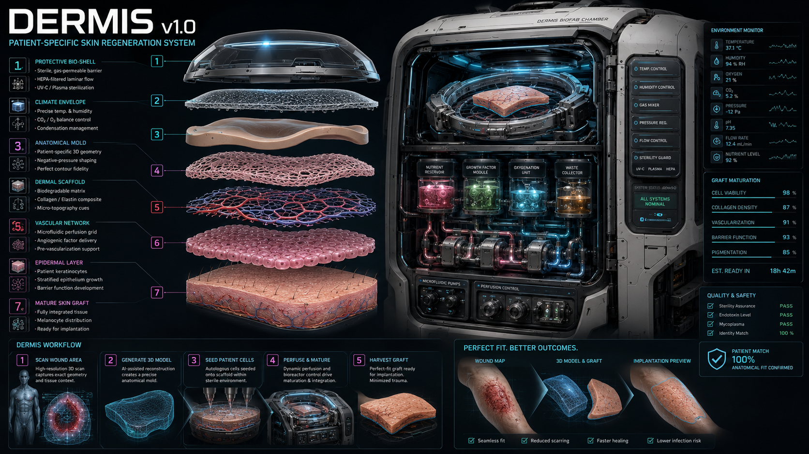

Illustrated biomedical research concept
DERMIS
Patient-specific skin-growth concept
Illustrated DERMIS v1.0 and v1.1, July 3, 2026.
Purpose and scope
An illustrated tissue-engineering proposal for patient-shaped skin graft research, with v1.0 showing a single graft chamber and v1.1 extending the concept to facial and shoulder growth frames.
Original concept illustrations
Concept illustration - unvalidated metrics and claims

Concept illustration - unvalidated metrics and claims

Evidence and limits
Single-site and multi-site concept artwork only; no manufactured bioreactor, cultured graft, measured viability, vascularization, barrier function, anatomical fit, sterility assurance, implantation or clinical outcome is established. All dashboard readings, countdowns, safety passes and benefit claims are illustrative.
Both original illustrated revisions are preserved. This is not a cell-culture protocol, treatment or transplant specification.
Next research gate
Seek independent tissue-engineering and regulatory review of the research question, and define nonclinical evidence requirements for geometry, material compatibility and tissue quality before any biological or clinical work.
Related concept records
Shared research themes only; no demonstrated integration or compatibility.
Provenance
Concept artwork supplied from Mr. Peloquin's collaborative design collection. Specific original authorship and independent technical review are unverified.
Source: supplied concept illustrations identified by matching July 3 filenames and visual fingerprints. The artwork is preserved, not treated as measured evidence.